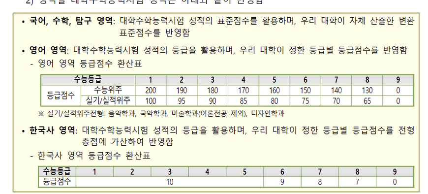
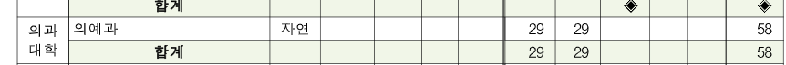

1. 의대 서열
의대는 입시 결과만을 기준으로 우열을 가리기는 애매합니다. 병원의 규모, 위치, 교내의 문화, 유급률 등등이 있기 때문입니다.
현직에 계신 의사분들은 보통 서울대말고는 의미없다는 분도 계시기 때문에 학교 서열에 너무 연연하지 않으셔도 될 것 같습니다. 또한 수련을 받을때 타교로 진학해도 괜찮기 때문에 더욱이 연연하지 않으셔도 될 것 같습니다. (학교 네임밸류보다 전공과가 더 중요할수도 있기 때문입니다.)
그래도 우선 일반적인 인식에 따른 서열을 이야기해보겠습니다.
1) 빅5 메이저 의대 (서울, 연세, 카톨릭, 울산대, 성균관대)
이 의대는 흔히 말하는 메이저의대입니다. 병원의 위치도 서울(울산은 요즘 울산에 남는다고 바뀌었다고 들은 것 같기도 합니다.)이고 인식도 좋고 티오(수련할 때 인기과의 자리)도 좋습니다.
2) 수도권 의대(아주 인하 가천) + 인서울 의대(경희 중앙 한양) +삼룡(인제 순천향 한림)
인서울 의대는 위치가 좋아서 입결이 높고 학교의 네임밸류가 좋기 때문에 인기가 많습니다. 사실 한양빼면 경희나 중앙은 티오가 좋진 않습니다. 수도권의대도 서울과 가깝기 때문에 인기가 많습니다. 아주대는 40명 정원중에 20명이 인기과일 정도로 티오도 좋습니다. 삼룡의는 지방에 있는 의대이고 학교의 네임밸류도 약합니다. 하지만 이 학교는 수련을 수도권이나 서울에서 받을 수 있고 티오가 굉장히 좋기 때문에 (인서울 의대보다도 나을수도 있습니다.) 인기가 많습니다.
3) 지거국 의대 (충북 전북 충남 전남 경북 부산 등)
지방거점국립대 의대 입니다. 등록금이 싸고 정부의 정책으로 인해 티오도 점점 좋아지고 있습니다.
4) 지방사립의대 (원광 고신 등)
지방사립의대 입니다. 티오가 조금 약합니다.
간단하게 적었지만 위의 순서가 성적순은 아닙니다. 왜냐하면 학교마다 수능 과목의 반영비율이 다르기 때문에 지거국 의대가 되어도 지방사립의대가 되지 않을 수도 있고 수도권의대가 되어도 지거국 의대가 되지 않을수도 있습니다. 수능 성적표가 나온 후에 학교가 정해진다고 생각할수도 있겠죠?
제 개인적인 생각입니다만 메이저의대나 인서울 의대가 아니라면 전 연고지에서 학교를 다니는게 좋다고 생각합니다. 제가 비연고지에서 학교를 다니고 있는데 솔직히 고독할 때가 있습니다. 예과+본과라면 6년이지만 만약 수련까지 이곳에서 하게 된다면 더욱 외로워질 것 같습니다. 그래서 자신의 집 가까운 곳의 학교를 가는게 최고인 것 같습니다.
그리고 만약 비연고지로 가게되더라도 수련을 집 가까운 곳으로 가셔도 됩니다. 만약 제주도 거주민이라면 서울에서 의대를 졸업 후 제주대 병원으로 인턴, 레지던트를 해도 되는 것입니다.
결국 최우선적인 것은 어떤 의대든지 합격을 하는 것입니다. 그 후에는 다 방법이 있습니다.
2. 의대 전략
그럼 합격해야겠죠? 이전 시간에는 과목별 팁을 알려드렸으니까 제가 개인적으로 생각하는 방교수님과 학습자분들의 최단기 합격 루트를 이야기해드리겠습니다.
(아마 방교수님도 다 고려했던 사항들이라고 생각합니다.)
25학년도부터는 증원이 확정됩니다. 제 개인적인 예상으로는 최대 1000명 정도 늘어날 것 이라고 생각합니다. 그 1000명 대부분이 지방의 대학으로 갈 것 같습니다. 여기에 포인트가 있습니다.
증원하는것은 의대 입학할때 호재입니다. 의대의 선호도도 조금은 줄어들 것이고 거기에 증원했기 때문에 절대적으로 들어갈 인원이 늘어나기 때문에 난이도는 쉬워질 것입니다. (새로운 n수생의 유입보다 증원의 효과가 더 큽니다. 그러니까 여러분은 걱정마십시오.)
거기에 가장 좋은 것은 바로 지역인재입니다.
최근 기사입니다. 전남대가 호남지역 (전북, 전남) 수험생들 대상으로만 수시를 뽑는다는 것입니다. 수시비율보다는 적겠지만 정시 지역인재도 늘어날 것입니다.
우선 많은 지역인재가 있지만 호남지역의 지역인재전형들만 우선 살펴보겠습니다. 다른 지역은 제가 쓰고 싶을때 이 글에 업데이트를 해놓겠습니다.
1) 전남대 지역인재 전형
 (이렇게 가끔 지역인재의 점수가 더 높을때도 있습니다. 어차피 원서 접수 전에 진학사로 서로의 점수를 공개하기 때문에 지역인재가 더 높은 것 같으면 일반전형 쓰셔도 됩니다.)
(이렇게 가끔 지역인재의 점수가 더 높을때도 있습니다. 어차피 원서 접수 전에 진학사로 서로의 점수를 공개하기 때문에 지역인재가 더 높은 것 같으면 일반전형 쓰셔도 됩니다.)
전남대는 이 조건을 만족한다면 수능에서 지역인재 전형을 쓸 수 있습니다.
지역인재전형은 24학년도모집전형에서 13명을 뽑네요. 25학년도에는 더 뽑을 것입니다.

과목은 국어, 수학(기하or미적분입니다. 확통은 안됩니다.), 탐구2과목, 한국사 입니다.
영어는 감점형식입니다. 웬만하면 1등급을 확보해야합니다.
전남대의대는 국어 30 수학 40 과학 30이네요. 수학이 제일 중요합니다.하지만 반영비 신경쓰시면서 공부하시면 안돼요. 무조건 다 잘해야겠다고 생각하시고 하셔야합니다. 나태해져요.
2) 전북대 지역인재 전형
위의 사진은 전북대 지역인재 전형 지원자격입니다.

지역인재 인원입니다. 29명 뽑습니다. 많이 뽑네요. 내년에는 더 늘어날 것입니다 아마.
전북대도 또한 국어 30 수학(여기도 기하, 미적분만 가능) 40 과학 30 입니다. 영어도 감점하는 형식이고 한국사는 4등급까지 만점취급입니다.
3) 조선대 지역인재*** (탐구 하나만 보는 독특한 곳임!!!!)

(조선대 지역인재 백분위가 기이하게 높은 것은 탐구과목을 하나만 반영하기 때문입니다. 기죽지 마세요.)
조선대는 우선 특이한 곳입니다. 탐구 2과목 중 잘하는 과목 하나만 반영하는 곳이기 때문에 한 과목 망친 수험생들에게 기회의 땅입니다. 예를들면 어떤 학생이 국영수를 잘 보고 지구과학1을 50점 만점에 50점을 받고 물리학1을 0점 받았다고 해봅시다. 그래도 이 학생은 조선대 의대를 갈 수 있습니다. 두 과목중 못 본 과목은 안 보기 때문입니다. 둘 다 만점 받았다고 해도 그 중 백분위 더 높은 과목이 들어갑니다. 탐구 하나 망했다고 포기 안 해도 되는 이유가 이 학교 때문입니다.
조선대 지역인재 전형 자격입니다.
인원은 32명이나 됩니다.
여전히 확통은 안됩니다. 그리고 위에 보이시죠? 탐구 한 과목 반영입니다!!
조선대 지역인재 전형 과목들의 반영비율들입니다. 한국사를 3등급까지 만점주는군요.
결론: 지금까지 의대 서열과 지역인재 중 호남지역만 살펴보았습니다. 호남지역이 지역인재가 꽤 많아서 우선 호남지역만 살펴보겠습니다. 방교수님이 시골 산다고 하셨기 때문에 지역인재가 가능하실 것 같아서 지역인재들을 살펴보았습니다. 어느 지역인지는 모르기 때문에 다른 지역들도 나중에 살펴보겠습니다. 아 한국사의 언급이 많았는데 한국사는 절대평가 (50~40 점 은 1등급 35~39 2등급, 30~34 3등급, 25~29 4등급.... )입니다. 그리고 권용기 선생님 강의 5강짜리였나 초고속 강의나 아니면 정석 강의 들어도 3등급 이내는 무조건 됩니다. 그냥 9월 모의고사 보기 전에 한 번 정리 해놓고 2~3주에 한 번씩 교재만 보셔도 충분합니다. 엄청 쉽게 나와요.
n수생 학습자분들이나 방교수님이나 아직은 쉬셔도 됩니다. 1~2월부터 설렁설렁 하시고 3월부터 본격적으로 시작하셔도 충분합니다.
3. 강원도 지역 지역인재
강원도 지역에는 의대가 4개가 있습니다. 연세대(원주), 한림대, 강원대, 관동대 이렇게 4곳입니다. 지난주에는 전라도 지역의 의대를 살펴보았고 오늘은 강원도 지역의 의대를 살펴보겠습니다.
1) 한림대 의대
한림대학교는 흔히 말하는 삼룡의 중 하나입니다. 티오가 굉장히 좋습니다. 공부를 조금만 해도 정형외과를 갈 수 있다고 할 정도입니다. 한림대는 학생부 종합을 통해 지역인재 전형으로 학생들을 뽑지만 정시로는 뽑지 않는 것 같습니다. 전 정시만 다루기 때문에 스킵하도록 하겠습니다.
2) 연세대 (원주) 의대
연세대 원주 캠퍼스도 정시로는 안 뽑는 것 같습니다..
3) 강원대학교 의대
강원대 의대는 찾아보니 저소득-지역인재 전형입니다. 이것도 수시모집 미충원 인원이 있을때만 가능한 것이라서 사실상 정시 전형에는 없다고 볼 수 있습니다.
그래도 살펴보자면 반영비율은 2:3:2:3 입니다. 수학은 확통은 제외고 사탐을 응시한다면 지원불가능입니다.
영어는 1등급 100 2등급 97 이런 식으로 감점을 합니다. 신기한 점은 한국사인데 한국사를 1등급을 받는게 안정적입니다. 2등급과 차이를 두기 때문입니다. 대부분의 학교가 3~4등급까지는 감점이 없는데 강원대는 사실상 감점이 있습니다.
4) 가톨릭 관동대 의대
찾아보니 농어촌전형은 있지만 지역인재 정시 전형은 없습니다. 농어촌전형 또한 위의 연세대 원주 캠퍼스와 마찬가지로 사실상 없는 전형인 것 같습니다.
강원도의 의대 4군데는 지역인재 정시 전형은 사실상 없다고 봐야할 것 같습니다. 현재 전라도,강원도를 살펴보았고 나머지는 충청도, 경상도, 제주도 입니다. 근데 경상도가 의대가 정말 많아서 경상도는 제가 하고싶을때 마지막에 하도록 하겠습니다. 제주도는 제주대 하나뿐이라 날먹하고 싶을때 써보겠습니다. 그럼 11월 26일은 강원도 까지만 쓰겠습니다.
곁다리 애니 이야기)
이 만화 알고 계시는 분 계신가요? 학원앨리스라고 제가 많이 좋아했던 애니입니다. 원작 만화로는 31권까지 나왔고 애니메이션은 6권까지의 분량인 학원제까지 나왔던 애니에요.
이 만화의 원작을 최근에 봤습니다....
이 캐릭터가 호타루(은교)인데 제 첫사랑 중 한 명입니다. 주인공의 절친이에요. 근데 만화를 보니까
주인공을 좋아하는 동성애의 성향이 있었습니다. 은교는 자신의 성향을 눈치채고 있었구요. 여기까지는 그러려니 했습니다.
(사진은 은교와 친오빠입니다.)
근데 작가가 미쳤는지 결말에 은교와 오빠를 시공의 폭풍속으로 집어넣어요. 거기까지도 그러려니 했습니다.
하지만 후일담을 보니 이 둘은 전국시대로 날라갔고 주인공과 친구들이 구하러 갔지만 은교와 친오빠는 사랑하는 사이가 되었고 둘이 전국시대에 남아서 사랑하는 사람의 아이를 낳고싶다고 하고 끝납니다. (작가가 혐한인데다가 근친을 좋아하는 미친놈입니다.)
충격적이어서 애니 이야기도 남깁니다.
후원댓글 5개
댓글 5개 ▼